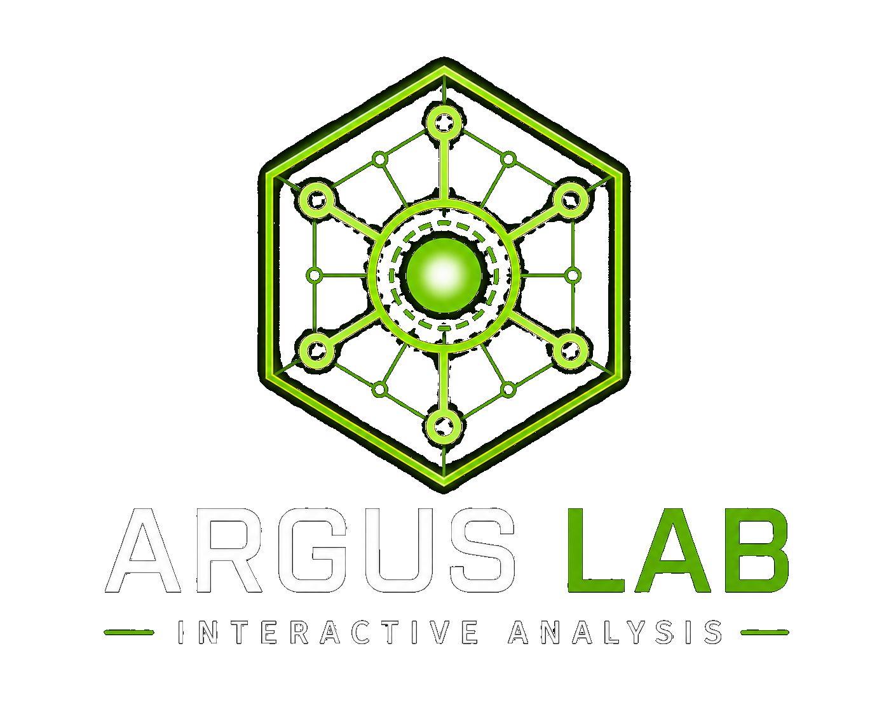

Argus Lab
Real Linux troubleshooting, practiced on real failure.
Argus Lab is a planned environment for hands-on Linux troubleshooting, training, and validation. It is built around controlled faults, resettable lab sessions, mentor-style AI guidance, and measurable growth in real diagnostic skill.

Planned training and validation environment
Argus Lab teaches troubleshooting through experience, not memorization.
Argus Lab started as a personal practice environment, a way to build real Linux skill by diagnosing and fixing actual system failures instead of only reading theory or working through tidy guided labs.
That original purpose still drives the project. Argus Lab is planned as a hands-on environment where learners work through realistic Linux problems: investigating symptoms, finding the root cause, repairing the issue, verifying recovery, and repeating the process safely.
Real skill comes from solving real problems.
As NeuroCore and Argus ACLI matured, Argus Lab grew into something larger. It is now planned as both a training environment for Linux users and a validation environment for testing diagnostic intelligence against known Linux faults.
Real systems
Argus Lab is planned around real Linux environments, with services, users, logs, permissions, networking, resource pressure, and the kind of behavior actual systems produce.
Controlled failures
Scenarios use repeatable injected faults that create realistic symptoms while keeping the environment safe to practice in, validate against, and reset cleanly.
Guided growth
The system should challenge learners first and offer progressive coaching only when they ask for hints, explanation, or a guided walkthrough.
Why it matters
Real troubleshooting does not feel like a multiple-choice question.
Traditional technical training builds familiarity, but real operational work is messier. Systems fail in unexpected ways. Logs are noisy. Symptoms mislead. Information is incomplete. There is rarely a clean step-by-step guide waiting beside the terminal.
Argus Lab is designed to bridge that gap by dropping users into support-ticket-style scenarios where they have to investigate, reason, test, correct course, and verify the result on their own.
- Service failures: figure out why something is down and what evidence proves it.
- Permissions issues: inspect ownership, groups, modes, access paths, and user impact.
- Networking problems: reason through reachability, DNS, firewall behavior, and listening services.
- System pressure: diagnose disk, memory, process, and performance symptoms.
- Configuration mistakes: find what changed, why it broke, and how to recover safely.
Training loop
Failure should be safe to practice.
Each Argus Lab scenario is intended to start from a known-good state, inject a controlled fault, let the learner investigate and repair the system, validate whether the issue was resolved, record what happened, and reset the environment for the next round.
known-good → injected fault → investigation → repair → validation → reset
This repeatable loop matters because troubleshooting skill develops through exposure, repetition, and reflection. Learners should be able to break things, investigate them, learn from them, and start fresh without manually rebuilding the entire environment.
Mentor-style AI guidance
The model should coach the learner, not hand over the answer.
Argus Lab is intended to integrate with NeuroCore and Argus ACLI as the platform matures. Each layer has a distinct role.
- NeuroCore controls runtime behavior, tool access, system interaction, memory direction, and governed execution paths.
- Argus ACLI collects, structures, and interprets real Linux system data through read-only diagnostics.
- The AI model uses that grounded Argus data to guide the learner progressively.
In a production diagnostic workflow, Argus might flag a failed service and recommend checking its state and recent logs. In Argus Lab, the model should behave more like a senior admin mentoring a junior admin: asking what the learner notices, suggesting what evidence to inspect next, and helping them reason their way to the root cause.
Independent mode
The learner gets the scenario and works without guidance unless they ask for it. This mode is for testing skill under realistic pressure.
Assisted mode
The learner can request hints, signal explanations, Linux concept clarification, or suggestions about what to inspect next.
Guided resolution
When the learner is stuck, the system can walk through the evidence, root cause, fix, verification steps, and the lesson behind the scenario.
Validation role
Argus Lab is also a proving ground for NeuroCore and Argus ACLI.
Controlled failure scenarios make it possible to test whether the diagnostic system behaves correctly against known Linux problems. That gives Argus Lab a second purpose: not only teaching people, but validating the intelligence being built around NeuroCore and Argus ACLI.
The lab can help confirm that NeuroCore interacts with real systems safely, that data collection stays controlled and traceable, that Argus ACLI identifies the right symptoms, that severity is classified accurately, that recommendations are useful, and that the raw evidence supports each finding.
Over time, the same lab can support regression testing for diagnostic behavior. When a known fault is injected, Argus should continue recognizing the relevant signals consistently as the platform evolves.
Planned environment shape
A lab should feel like a real environment, not a toy simulator.
The planned direction is a small-business-style Linux environment with defined system roles, interacting services, and realistic operational problems. The exact design will evolve as the project matures, but the goal is for the systems to behave like real infrastructure.
- client01: an admin workstation for investigation and operations.
- web01: a web or application server for service and access scenarios.
- files01: a file and backup server for storage, permissions, and recovery scenarios.
- mon01: a monitoring system for signal, alerting, and observability practice.
- infra01: DNS and infrastructure services for dependency-based troubleshooting.
- legacy01: an optional degraded system for older, messier troubleshooting scenarios.
The exact host list is not the point. What matters is that learners work against systems with real roles, real dependencies, real failure symptoms, and real recovery criteria.
Future-phase status
Argus Lab is planned work, not a finished training product.
Argus Lab is currently in planning and public documentation mode. Implementation has not started. The current focus is aligning the public vision, repository structure, training model, and validation direction with the larger NeuroCore and Argus ACLI ecosystem.
Build-out is planned to begin once the core NeuroCore and Argus ACLI V1 path is stable enough to support meaningful validation. That order keeps the page honest: Argus Lab is a serious part of the long-term ecosystem, but it should not be presented as something available today.
For learners
Argus Lab is designed for aspiring system administrators, junior admins, self-taught learners, homelab users, and future Linux users who need practice that goes beyond theory.
For diagnostics
Known faults can validate whether Argus finds the right signals, classifies severity correctly, gives useful recommendations, and preserves the evidence behind each call.
For growth
Long term, Argus Lab may track time to completion, hints requested, command usage, diagnosis quality, repair quality, verification steps, and improvement over time.
What Argus Lab is not
It should not remove difficulty. It should make difficulty safe to practice.
Argus Lab is not a multiple-choice trainer, a fake terminal simulator, a simple guided tutorial, a memorization tool, or an automated answer machine.
The learner should still have to think. The system should make real troubleshooting safer to practice, not replace the learning process with instant answers.